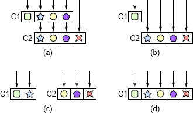
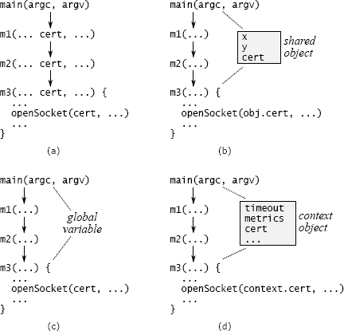

第七章 不同的层，不同的抽象
软件系统由层组成，其中较高的层使用较低层提供的功能。在设计良好的系统中，每一层都提供与其上，下两层不同的抽象。如果您通过调用方法遵循单个操作在层中上下移动，则每个方法调用的抽象都会改变。例如：
- 在文件系统中，最上层实现文件抽象。文件由可变长度的字节数组组成，可以通过读写可变长度的字节范围来更新该字节。文件系统的下一个下一层在固定大小的磁盘块的内存中实现了高速缓存。调用者可以假定经常使用的块将保留在内存中，以便可以快速访问它们。最低层由设备驱动程序组成，它们在辅助存储设备和内存之间移动块。
- 在诸如 TCP 的网络传输协议中，最顶层提供的抽象是从一台机器可靠地传递到另一台机器的字节流。此级别在较低级别上构建，该级别可以尽最大努力在计算机之间传输有限大小的数据包：大多数数据包将成功交付，但某些数据包可能会丢失或乱序交付。
7.1 Pass-through methods 直通方法
当相邻的层具有相似的抽象时，问题通常以直通方法的形式表现出来。直通方法是一种很少执行的方法，除了调用另一个方法（其签名与调用方法的签名相似或相同）之外。例如，一个实施 GUI 文本编辑器的学生项目包含一个几乎完全由直通方法组成的类。这是该类的摘录：
public class TextDocument ... {
private TextArea textArea;
private TextDocumentListener listener;
...
public Character getLastTypedCharacter() {
return textArea.getLastTypedCharacter();
}
public int getCursorOffset() {
return textArea.getCursorOffset();
}
public void insertString(String textToInsert, int offset) {
textArea.insertString(textToInsert, offset);
}
public void willInsertString(String stringToInsert, int offset) {
if (listener != null) {
listener.willInsertString(this, stringToInsert, offset);
}
}
...
}
该类别中 15 个公共方法中的 13 个是直通方法。
直通方法是一种不执行任何操作的方法，只是将其参数传递给另一个方法，通常使用与直通方法相同的 API。这通常表示各类之间没有明确的职责划分。
直通方法使类变浅：它们增加了类的接口复杂性，从而增加了复杂性，但是并没有增加系统的整体功能。在上述四个方法中，只有最后一个具有任何功能，甚至没有什么功能：该方法检查一个变量的有效性。直通方法还会在类之间创建依赖关系：如果针对 TextArea 中的 insertString 方法更改了签名，则必须更改 TextDocument 中的 insertString 方法以进行匹配。
直通方法表明类之间的责任划分存在混淆。在上面的示例中，TextDocument 类提供了 insertString 方法，但是用于插入文本的功能完全在 TextArea 中实现。这通常是一个坏主意：某个功能的接口应该在实现该功能的同一类中。当您看到从一个类到另一个类的直通方法时，请考虑这两个类，并问自己“这些类分别负责哪些功能和抽象？” 您可能会注意到，各类之间的职责重叠。
解决方案是重构类，以使每个类都有各自不同且连贯的职责。图 7.1 说明了几种方法。一种方法，如图 7.1（b）所示，是将较低级别的类直接暴露给较高级别的类的调用者，而从较高级别的类中删除对该功能的所有责任。另一种方法是在类之间重新分配功能，如图 7.1（c）所示。最后，如果无法解开这些类，最好的解决方案可能是如图 7.1（d）所示合并它们。
在上面的示例中，职责交织的三个类为：TextDocument，TextArea 和 TextDocumentListener。学生通过在类之间移动方法并将三个类缩减为两个类来消除直通方法，这两个类的职责更加明确。

图 7.1：直通方法。在（a）中，类 C1 包含三个直通方法，这些方法只调用 C2 中具有相同签名的方法（每个符号代表一个特定的方法签名）。可以通过使 C1 的调用方像在（b）中那样直接调用 C2，通过在 C1 和 C2 之间重新分配功能以避免在（c）中的类之间进行调用，或者通过组合在（d）中的类来消除直通方法。 。
7.2 接口复制何时可以
具有相同签名的方法并不总是不好的。重要的是，每种新方法都应贡献重要的功能。直通方法很糟糕，因为它们不提供任何新功能。
分派器是一个示例，该示例对于一种方法调用具有相同签名的另一种方法很有用。调度程序是一种使用其参数选择要调用的其他方法之一的方法。然后将其大部分或所有参数传递给所选方法。调度程序的签名通常与其调用的方法的签名相同。即便如此，调度程序仍提供有用的功能：它可以选择其他几种方法中的哪一种来执行每个任务。
例如，当 Web 服务器从 Web 浏览器接收到传入的 HTTP 请求时，它将调用一个调度程序，该调度程序检查传入请求中的 URL 并选择一种特定的方法来处理该请求。某些 URL 可以通过返回磁盘上文件的内容来处理。其他人则可以通过调用诸如 PHP 或 JavaScript 之类的语言的过程来处理。分发过程可能非常复杂，通常由与传入 URL 匹配的一组规则来驱动。
只要每种方法都提供有用且独特的功能，几种方法都应具有相同的签名。调度程序调用的方法具有此属性。另一个示例是具有多种实现方式的接口，例如操作系统中的磁盘驱动程序。每个驱动程序都支持不同类型的磁盘，但是它们都有相同的接口。当几种方法提供同一接口的不同实现时，它将减少认知负担。使用其中一种方法后，与其他方法一起使用会更容易，因为您无需学习新的接口。像这样的方法通常位于同一层，并且它们不会相互调用。
7.3 装饰器
装饰器设计模式(也称为“包装器”)是一种鼓励跨层复制 API 的模式。装饰对象接受现有对象并扩展其功能;它提供一个与底层对象相似或相同的 API，它的方法调用底层对象的方法。在第 4 章的 Java I/O 示例中，BufferedInputStream 类是一个装饰器:给定一个 InputStream 对象，它提供了相同的 API，但是引入了缓冲。例如，当它的 read 方法被调用来读取单个字符时，它会调用底层 InputStream 上的 read 来读取更大的块，并保存额外的字符来满足未来的 read 调用。另一个例子出现在窗口系统中:Window 类实现了一个不能滚动的窗口的简单形式，而 ScrollableWindow 类通过添加水平和垂直滚动条来装饰窗口类。
装饰器的动机是将类的专用扩展与更通用的核心分开。但是，装饰器类往往很浅：它们引入了大量的样板，以实现少量的新功能。装饰器类通常包含许多直通方法。过度使用装饰器模式很容易，为每个小的新功能创建一个新类。这导致诸如 Java I/O 示例之类的浅层类激增。
创建装饰器类之前，请考虑以下替代方法：
- 您能否将新功能直接添加到基础类，而不是创建装饰器类？如果新功能是相对通用的，或者在逻辑上与基础类相关，或者如果基础类的大多数使用也将使用新功能，则这是有意义的。例如，几乎每个创建 Java InputStream 的人都会创建一个 BufferedInputStream，并且缓冲是 I/O 的自然组成部分，因此应该合并这些类。
- 如果新功能专用于特定用例，将其与用例合并而不是创建单独的类是否有意义？
- 您可以将新功能与现有的装饰器合并，而不是创建新的装饰器吗？这将导致一个更深的装饰器类，而不是多个浅的装饰器类。 最后，问问自己新功能是否真的需要包装现有功能：是否可以将其实现为独立于基类的独立类？在窗口示例中，滚动条可能与主窗口分开实现，而无需包装其所有现有功能。
有时装饰者很有意义，但通常有更好的选择
7.4 接口与实现
“不同层，不同抽象”规则的另一个应用是，类的接口通常应与其实现不同：内部使用的表示形式应与接口中出现的抽象形式不同。如果两者具有相似的抽象，则该类可能不是很深。例如，在第 6 章讨论的文本编辑器项目中，大多数团队都以文本行的形式实现了文本模块，每行分别存储。一些团队还使用 getLine 和 putLine 之类的方法围绕行设计了文本类的 API。但是，这使文本类使用起来较浅且笨拙。在较高级别的用户界面代码中，通常在行中间插入文本（例如，当用户键入内容时）或删除跨行的文本范围。通过用于文本类的面向行的 API，调用者被迫拆分和合并行以实现用户界面操作。这段代码很简单，并且在用户界面的实现中被复制和散布。
文本类提供面向字符的接口时，使用起来要容易得多，例如，insert 方法可在文本的任意位置插入任意文本字符串（可能包括换行符），而 delete 方法则删除文本在文本中的两个任意位置之间。在内部，文本仍以行表示。面向字符的接口封装了文本类内部的行拆分和连接的复杂性，这使文本类更深，并简化了使用该类的高级代码。通过这种方法，文本 API 与面向行的存储机制大不相同。差异表示该类提供的有价值的功能
跨层 API 复制的另一种形式是传递变量，该变量是通过一长串方法向下传递的变量。图 7.2（a）显示了数据中心服务的示例。命令行参数描述用于安全通信的证书。只有底层方法 m3 才需要此信息，该方法调用一个库方法来打开套接字，但是该信息会通过 main 和 m3 之间路径上的所有方法向下传递。cert 变量出现在每个中间方法的签名中。
传递变量增加了复杂性，因为它们强制所有中间方法知道它们的存在，即使这些方法对变量没有用处。此外，如果存在一个新变量（例如，最初构建的系统不支持证书，但是您后来决定添加该支持），则可能必须修改大量的接口和方法才能将变量传递给所有相关路径。
消除传递变量可能具有挑战性。一种方法是查看最顶层和最底层方法之间是否已共享对象。在图 7.2 的数据中心服务示例中，也许存在一个对象，其中包含有关网络通信的其他信息，这对于 main 和 m3 都是可用的。如果是这样，main 可以将证书信息存储在该对象中，因此不必通过通往 m3 的路径上的所有干预方法来传递证书（请参见图 7.2（b））。但是，如果存在这样的对象，则它本身可能是传递变量（m3 还将如何访问它？）。
另一种方法是将信息存储在全局变量中，如图 7.2（c）所示。这避免了将信息从一个方法传递到另一个方法的需要，但是全局变量几乎总是会产生其他问题。例如，全局变量使得不可能在同一过程中创建同一系统的两个独立实例，因为对全局变量的访问会发生冲突。在生产中似乎不太可能需要多个实例，但是它们通常在测试中很有用。
我最常使用的解决方案是引入一个上下文对象，如图 7.2（d）所示。上下文存储应用程序的所有全局状态（否则将是传递变量或全局变量的任何状态）。大多数应用程序在其全局状态下具有多个变量，这些变量表示诸如配置选项，共享子系统和性能计数器之类的内容。每个系统实例只有一个上下文对象。上下文允许系统的多个实例在单个进程中共存，每个实例都有自己的上下文。
不幸的是，在许多地方可能都需要上下文，因此它有可能成为传递变量。为了减少必须意识到的方法数量，可以将上下文的引用保存在系统的大多数主要对象中。在图 7.2（d）的示例中，包含 m3 的类将对上下文的引用作为实例变量存储在其对象中。创建新对象时，创建方法将从其对象中检索上下文引用，并将其传递给新对象的构造函数。使用这种方法，上下文随处可见，但在构造函数中仅作为显式参数出现。

图 7.2：处理传递变量的可能技术。在（a）中，证书通过方法 m1 和 m2 传递，即使它们不使用它也是如此。在（b）中，main 和 m3 具有对一个对象的共享访问权，因此可以将变量存储在此处，而不用将其传递给 m1 和 m2。在（c）中，cert 存储为全局变量。在（d）中，证书与其他系统范围的信息（例如超时值和性能计数器）一起存储在上下文对象中；对上下文的引用存储在其方法需要访问它的所有对象中。
上下文对象统一了所有系统全局信息的处理，并且不需要传递变量。如果需要添加新变量，则可以将其添加到上下文对象；除了上下文的构造函数和析构函数外，现有代码均不受影响。由于上下文全部存储在一个位置，因此上下文可以轻松识别和管理系统的全局状态。上下文也便于测试：测试代码可以通过修改上下文中的字段来更改应用程序的全局配置。如果系统使用传递变量，则实施此类更改将更加困难。
上下文远非理想的解决方案。存储在上下文中的变量具有全局变量的大多数缺点。例如，为什么存在特定变量或在何处使用特定变量可能并不明显。没有纪律，上下文会变成巨大的数据抓包，从而在整个系统中创建不明显的依赖关系。上下文也可能产生线程安全问题；避免问题的最佳方法是使上下文中的变量不可变。不幸的是，我没有找到比上下文更好的解决方案。
7.6 结论
接口，参数，函数，类或定义之类的添加到系统中的每个设计基础架构都会增加复杂性，因为开发人员必须了解该元素。为了使元素能够提供相对于复杂性的净收益，它必须消除在没有设计元素的情况下会出现的一些复杂性。否则，最好不要使用该特定元素来实施系统。例如，一个类可以通过封装功能来降低复杂性，以使该类的用户无需意识到这一点。
“不同的层，不同的抽象”规则只是此思想的一种应用：如果不同的层具有相同的抽象，例如直通方法或装饰器，则很有可能它们没有提供足够的利益来补偿它们代表的其他基础结构。类似地，传递参数要求几种方法中的每一种都知道它们的存在（这增加了复杂性），而又不提供其他功能。